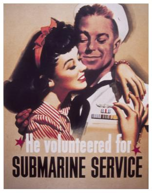
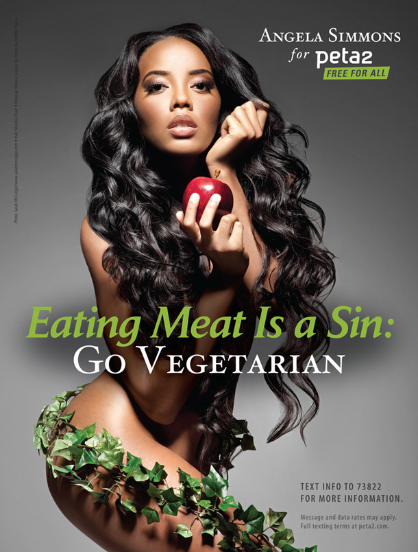

Exercise Set 1.3
Analyzing Visual Arguments
Instructions: For each image or video below, write a premise-and-conclusion outline of the argument that you think the image or video is trying to communicate.
Sample Exercise

(2) Local markets are an important part of America.
Therefore, (3) Big box stores are destroying an important part of America.
As with many visual arguments, this visual argument contains both text and images—but the images are what do a lot of the work. The text on this sign asserts the first premise in this outline: Big box stores are putting local markets out of business. But it doesn't say anything about the second premise. So where does that premise come from? To understand that, you need to consider the image itself. The message is presented on a fake historical marker. Historical markers are used to commemorate important pieces of national history, such as the former homes of national heroes and heroines. By presenting the claim about big box stores and local markets on a fake historical marker, the person who created this visual argument is trying to emphasize that local markets are a vanishing but important piece of American history.
There is, as with all visual arguments, some room for disagreement about exactly what argument is being communicated here. In particular, you might wonder exactly what conclusion the argument's creator intended. Is it that we should oppose big box stores? That we shouldn't shop there? Or just that it's regrettable that local markets are disappearing? The sample response here chose to go with a fairly mild conclusion. This is generally a safe choice, since it avoids attributing more to the argument's creator than he or she would accept.
-
1Source: U.S. Navy, 1939
-
2Source: "When Pigs Fly - Doritos Crash the Super Bowl 2015 OFFICIAL WINNER," Nelson Talbot, YouTube, Nov 9, 2014
-
3Source: "Go Vegetarian with Angela Simmons," peta2, 2011, https://www.peta2.com/news/angela-simmons-go-vegetarian-ad/
-
4Source: StreetSmart, 2015, http://bestreetsmart.net
-
5Source: "This Is Your Brain on Drugs," Advertising Media Partnership for a Drug Free America, 1987
-
6Source: "MoneyBART," The Simpsons (Los Angeles: 20th Century Fox Television, Oct 10, 2010)
-
7Source: "Peace, Little Girl," Democratic National Committee, 1964
-
8Source: "3M Security Glass," Cea, 2010, http://www.flickr.com/photos/centralasian/5246646656/
-
9Source: "Garage Band," Android, Nov 12, 2014
-
10Source: "MORE WOMEN #ELLEFeminism," ELLEUKTV, Oct 7, 2015